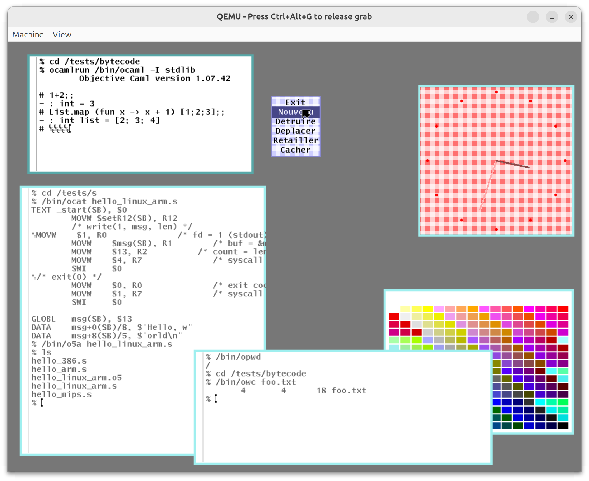

Plan 9 programs, rewritten in OCaml
What's New · About · The Books · Source Code
XIX (a recursive acronym for "XIX is XIX") is a port of the C source
code of major
Plan 9
programs to
OCaml,
an industrial-strength functional programming language.
The ports include the build system mk,
the shell rc,
the ARM and MIPS toolchains (5a, 5c,
5l),
the windowing system rio,
and more.
The project also includes programs beyond Plan 9: ocaml-light, a simplified OCaml compiler used to run OCaml programs on Plan 9; efuns, an Emacs clone; ogit, a git implementation; and mmm, a web browser.
XIX is a companion project to Principia Softwarica, a series of literate programming books explaining Plan 9 source code. Each OCaml port has its own book (see the full list).
The original motivation comes from the Principia Softwarica project, a series of books explaining Plan 9 source code. One strategy to fully understand a program — in order to explain its code in a book — is, perhaps surprisingly, to try to port it to another language. During the porting process, it is tempting to skip features initially judged to be accessory. Discovering what is truly essential already helps understand the original code. Moreover, the final port very often does not work at first because those "accessory" features turned out to be essential, which reveals hidden subtleties in the original.
The ports turned out to be useful on their own. OCaml programs are portable — unlike the Plan 9 C code, most XIX programs run on Linux, macOS, and Windows without extra effort. The OCaml code is also roughly 2x more succinct than C, arguably clearer, and safer (no segfaults or buffer overflows). In fact, it became easier to experiment with new features first in OCaml, and only later port them back to the original C code.
The pair omk/orc is mature enough to
drive the build process of XIX itself, dogfooding those tools.
And orio can substitute the original rio
in Plan 9 without any visible difference.
Running OCaml programs on Plan 9 required porting OCaml itself.
Fortunately, OCaml has a bytecode compiler (ocamlc)
whose interpreter (ocamlrun) is a small C program
with very few dependencies.
By cross-compiling this interpreter with the Plan 9 C compiler,
you can then run ocamlc itself to compile other programs.
This work is available as
ocaml-light,
based on an old version of OCaml (1.07) chosen for its minimal dependencies.
Here is orio running on Plan 9, substituting the
original C rio windowing system.
The terminal windows show various XIX programs in use:
omk building code, orc as the shell,
and oas/olk compiling and linking programs
— all OCaml binaries running on Plan 9 via ocamlrun.

Each OCaml port has its own literate programming book (See more about literate programming.), just like the C originals in the Principia series. The books can be read standalone, but they occasionally reference their C counterparts for comparison.
LOC = lines of code; LOE = lines of explanation; Pages = typeset pages.
| Category | Book | Program | Ported from | LOC | LOE | LOE/ LOC |
Pages |
|---|---|---|---|---|---|---|---|
| Core system | Shell | orc | rc | 2150 | 2310 | 1.07 | 126 |
| Development toolchain | C compiler | occ | 5c | 6250 | 850 | 0.14 | 173 |
| Assembler | oas | 5a | 1750 | 350 | 0.20 | 76 | |
| Linker | olk | 5l | 2650 | 500 | 0.19 | 96 | |
| OCaml compiler | ocaml-light | ocamlc/ocamlrun | 16300 | 2250 | 0.14 | 500 | |
| Lex and Yacc | olex, oyacc | lex, yacc | 3500 | 800 | 0.23 | 111 | |
| Developer tools | Editor | oed | ed | 1500 | 350 | 0.23 | 55 |
| Editor (advanced) | efuns | Emacs | 7250 | 2400 | 0.33 | 175 | |
| Build system | omk | mk | 2750 | 1400 | 0.51 | 112 | |
| Version control | ogit | git | 5600 | 4400 | 0.79 | 202 | |
| Graphics | Windowing system | orio | rio | 3300 | 550 | 0.17 | 123 |
| Networking | Web browser | mmm | 22350 | 2450 | 0.11 | 499 |
The OCaml ports are spread across several repositories:
XIX is part of the Principia Softwarica project.